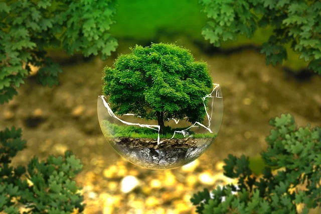
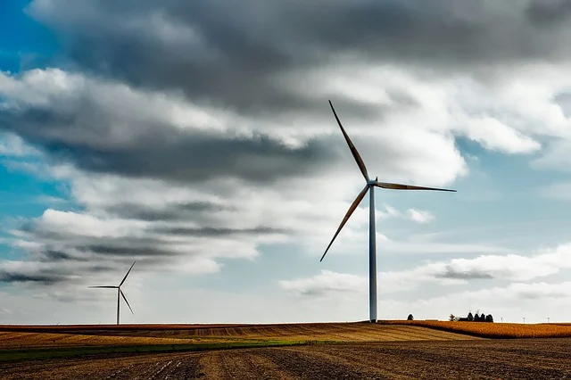

-

-

-

l'écologie du numérique
les enjeux
situation actuelle
Le numérique représente aujourd'hui un secteur économique majeur. Pourtant, les auteurs du rapport soulèvent bien un paradoxe : « les utilisateurs du numérique oublient encore bien souvent que les échanges numériques dits "dématérialisés" ne peuvent exister qu'en s'appuyant sur un secteur bien matériel composé de terminaux, de centres informatiques et de réseaux ».
Dans les faits, les terminaux (smartphones, ordinateurs, écrans, etc.) sont à l'origine de 81 % des impacts environnementaux du numérique, révèle le rapport. Les phases en « amont », à savoir la fabrication et la distribution de ces terminaux, engendrent à elles seules une très grande partie de leurs émissions totales (86 %). C'est donc sur cet aspect-là que les sénateurs insistent sur la priorité, selon eux, de limiter dans l'ensemble le renouvellement des terminaux. Ils proposent notamment d'introduire une taxe carbone aux frontières européennes pour « internaliser le coût environnemental des terminaux importés » et souhaitent « renforcer les sanctions pour obsolescence programmée », en faisant émerger par exemple un « recours plus systématique au name and shame ». En s'attaquant, au fond, à la lutte contre l'obsolescence logicielle.
Alors que la durée de vie moyenne d'un smartphone est de 23 mois, les rapporteurs préconisent de recourir plus systématiquement aux appareils reconditionnés, notamment dans le cadre du renouvellement des flottes d'entreprise. Cette incitation pourrait se traduire par une réduction du taux de TVA sur la réparation de terminaux et l'acquisition d'objets reconditionnés, parallèlement à une adaptation du cahier des charges des éco-organismes, chargés de la collecte des produits en fin de vie.
le poids du numérique
Le secteur du numérique représente aujourd’hui 6% du PIB français soit quelques 150 milliards d’euros.
Alors que la crise actuelle devrait encore accélérer la transformation numérique de notre société, le CMIT revient sur les grandes tendances à suivre dans ce domaine d’ici 2022…
la transition numérique en entreprise
La transition numérique des entreprises est la transformation des entreprises vers le digital. Elle remet en cause l’organisation et les modes de fonctionnement dits « traditionnels » des entreprises. Elle permet aux entreprises de devenir plus concurrentielles grâce au digital et une réorganisation des process. A défaut d’effectuer cette transition, les entreprises prennent le risque de perdre des parts de marché importantes dans un monde où le client est désormais hyperconnecté.
La transition numérique ne touche pas que les grands groupes du CAC 40 mais bien toute entreprise souhaitant rester à flot. Pour Max Huard, PDG d’Oracle Corporation, « la transformation digitale n’est pas un choix, c’est une obligation pour les entreprises si elles veulent survivre dans un contexte où le client désormais hyperconnecté a pris le pouvoir ».
Pourtant des études récentes montrent que 59% de français achètent sur internet alors que seules 11% des entreprises possèdent un site internet. Internet est également la première source d’information pour les consommateurs. C’est pourquoi, les entreprises doivent revoir leur approche client, leur approche commerciale afin de rentrer dans l’ère de l’expérience client comme départ pour toute élaboration stratégique. Alors pourquoi les entreprises françaises peinent-elles à s’y mettre ?
le monde de demain
sensibilisation écologique
La protection de l'environnement et la référence à l'écologie sont considérées, dans les pays développés, depuis longtemps, comme des tendances socioculturelles fortes et durables. Elles ont un effet non négligeable sur les modes de production des entreprises, le mode de vie et le comportement des consommateurs. Le programme des Nations pour l’environnement (PNUE) appelle une participation urgente des consommateurs à la protection de l’environnement et au traitement des questions écologiques (rapport PNUE 1999). Il prône pour une consommation durable (sustainable consumption) et non pas une consommation matérielle.
les lois qui changent le monde